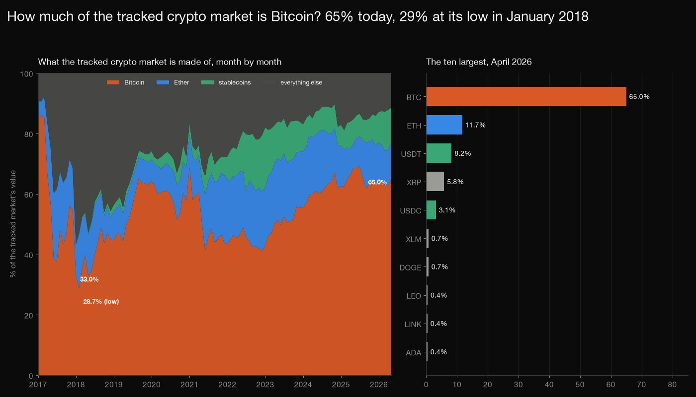
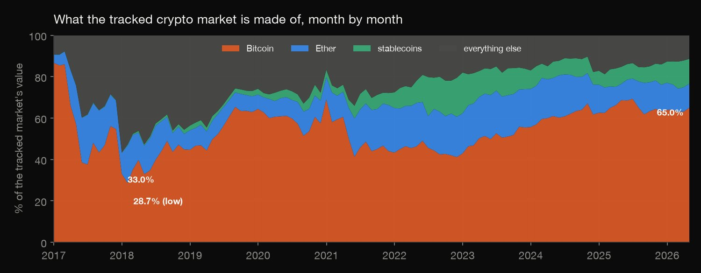
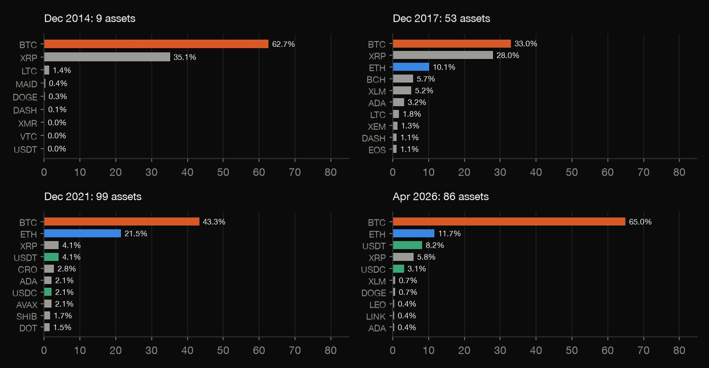
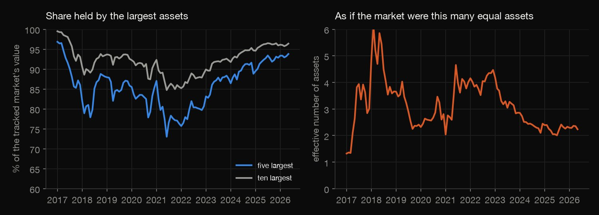
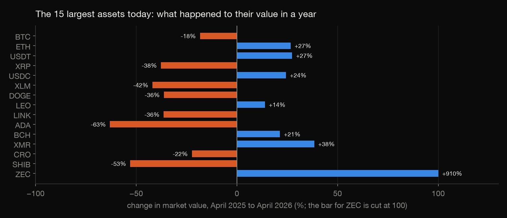

Python · Data cleaning · 2026-10
How Much of the Crypto Market Is Bitcoin?
Among the assets Coin Metrics tracks, Bitcoin's share of market value was 28.7% at its low in January 2018 and is 65.0% in April 2026; stablecoins peaked near 20%, the five largest assets now hold 94%, and cleaning out double counting moves Bitcoin's share by 6.5 points.

This is the market Coin Metrics tracks, not the whole market: Solana, the Tron coin and Toncoin are not in it, and the universe grows from 2 assets in 2013 to about 100, so early shares are high partly because little else was tracked. Value is price times current supply, which counts locked and escrowed supply and inflates XRP's early share. The wrapped, copy and stablecoin lists are my classification and other choices would move shares by a few points. Month-end snapshots only; free for non-commercial use (CC BY-NC 4.0).
01 — The problem
The DataCamp cryptocurrency project starts with a messy table of coins and asks how big Bitcoin is next to the rest. What share of the crypto market is Bitcoin, how has it moved, and what does it take to count the market without counting anything twice?
The questions follow DataCamp's "Exploring the Bitcoin Cryptocurrency Market". The data is Coin Metrics' free community data: the market value of every asset it tracks on the last day of each month, 2013 to 2026. It is real and public, not a course file, and it is the market Coin Metrics tracks, not the whole market.
02 — What I built
160 month-end cross-sections, cleaned and measured:
- Audit: duplicates, zero caps, coverage over time, and ids that are copies of another asset on one chain.
- Cleaning: wrapped and staked claims, chain-specific copies and the Avalanche chains, with every touched asset listed.
- Measures: Bitcoin, Ether, stablecoin and gold shares, concentration, the top ten on four dates and a year of change.
- Check:
check.pyre-implements the cleaning and recomputes 2,394 numbers from the raw table.
03 — How it was built
- 01
Download the month-end cross-sections
Coin Metrics' free community API gives each asset's market value (price times current supply) on a date. One request per month end from January 2013 to April 2026: 160 responses, 10,885 rows for 135 assets, stored as one small table and committed with its checksum.
- 02
Audit before cleaning
No duplicate date-asset rows and 35 rows with a cap of zero (dropped). The tracked universe grows: 2 assets at the end of 2013, 18 in 2016, 58 in 2017, 107 in 2020. 40 asset ids have an underscore, such as usdt_eth, which is Tether on one blockchain and part of Tether as a whole.
yearend = d[d["date"].dt.month == 12].groupby("date")["asset"].nunique() - 03
Count nothing twice
On each date: drop wrapped, migrated or staked claims on another tracked asset (wbtc, weth and a few others); sum the three Avalanche chains into one asset; drop a chain-specific copy if the whole asset is also reported that day, and otherwise sum the copies into one asset. Every asset a rule touches is listed in
cleaning.csv.base = a.split("_")[0] if base in present: - 04
Measure the market
On each date: the shares of Bitcoin, Ether, stablecoins (a named list) and tokenized gold, the shares of the five and ten largest, and the effective number of assets, 1 divided by the sum of squared shares. The top ten on four dates and the twelve-month change of the 15 largest today.
st = sum(v for k, v in s.items() if k in STABLE); gd = sum(v for k, v in s.items() if k in GOLD); hhi = sum((v / t) ** 2 for v in s.values()) - 05
Recompute it with the rules re-implemented
check.pyre-implements the cleaning rules in plain Python with dicts and loops and recomputes 2,394 numbers straight from the raw table: the audit, what each rule did, every date's shares and concentration measures, the top tens, the movers and the extremes.fam = "avax" if a in ("avaxc", "avaxp", "avaxx") else a
04 — Results

| Month | n | Bitcoin | Ether | Stable |
|---|---|---|---|---|
| Dec 2013 | 2 | 93.9% | 0.0% | 0.0% |
| Dec 2017 | 53 | 33.0% | 10.1% | 0.2% |
| Jan 2018 | 55 | 28.7% | 18.1% | 0.4% |
| Dec 2021 | 99 | 43.3% | 21.5% | 7.6% |
| Dec 2022 | 96 | 42.8% | 19.4% | 19.7% |
| Apr 2026 | 86 | 65.0% | 11.7% | 12.0% |
Bitcoin's share has swung between 29% and 87%. "n" is the number of assets tracked and "Stable" is stablecoins as a share of the tracked value. Among the cleaned tracked assets Bitcoin is 93.9% at the end of 2013, when two assets are tracked, 33.0% at the end of 2017 (53 assets), 43.3% at the end of 2021 (99) and 65.0% on 30 April 2026 (86). With at least 10 assets reported, the lowest is 28.7% in January 2018 and the highest 86.8% in November 2015; it is below half in 45 of the 135 such months. Ether peaked at 24.0% in June 2017 and is 11.7% now; tokenized gold is 0.2%.

The cast changes. In December 2014, XRP held 35.1% and Litecoin 1.4%. In December 2017 the top five were Bitcoin 33.0%, XRP 28.0%, Ether 10.1%, Bitcoin Cash 5.7% and Stellar 5.2%. In December 2021, Bitcoin 43.3%, Ether 21.5%, XRP 4.1%, Tether 4.1% and Cronos 2.8%. In April 2026, Bitcoin 65.0%, Ether 11.7%, Tether 8.2%, XRP 5.8% and USD Coin 3.1%. XRP's early shares are on a definition that counts its escrowed supply.

Concentrated, and more so. The five largest hold 93.8% of the tracked value now and the ten largest 96.4%. The effective number of assets, 1 divided by the sum of squared shares, is 2.24, down from 6.14 in January 2018: the market behaves like two or three equal assets.

A year of change. From April 2025 to April 2026 the value of Bitcoin fell 18%, Ether rose 27%, Tether 27% and USD Coin 24%; XRP fell 38%, Stellar 42%, Dogecoin 36%, Cardano 63% and Shiba Inu 53%; Monero rose 38% and Zcash 910%.
Cleaning matters. On 30 April 2026 the uncleaned table sums to 2.61 trillion dollars with Bitcoin at 58.5%; cleaned it is 2.35 trillion and 65.0%, because copies of Tether and USD Coin on other chains, and wrapped Bitcoin and Ether, were counted twice. 19 asset ids are dropped on at least one date, 27 chain-specific ids are kept as one asset because the whole asset is not reported, and the three Avalanche chains are summed.
05 — What I'd do next
- Use a data source that tracks the whole market, so Solana, Tron and the others are in the denominator, and compare the shares.
- Use circulating supply instead of current supply, to see how much of the early XRP share is escrow.
- Follow the same cohort of assets through time, so that the share is not moved by new assets being added to the data.